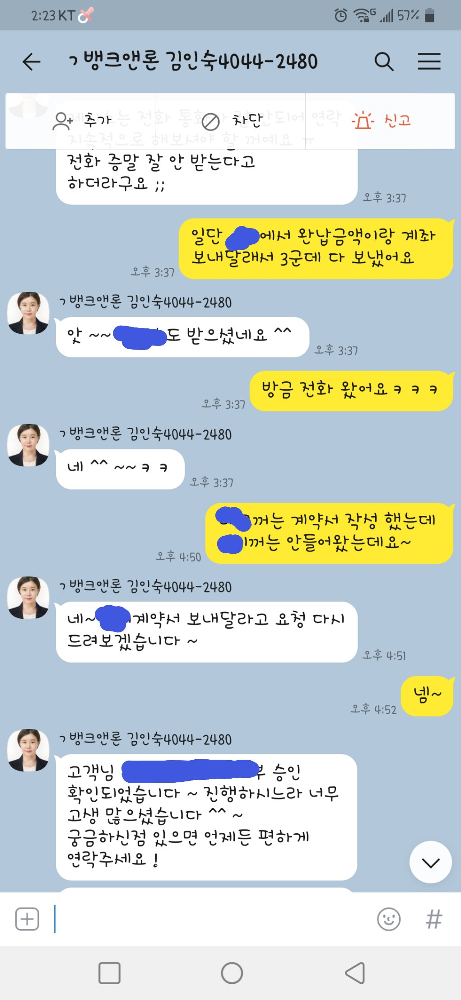

[개인회생자대출] 늦은 대출후기 올립니다~

저는 회생자 60회차중 53회차까지 미납 없이 납부했고
기존에 골* /태*/조* 이렇게 총 3군데 800만원 좀 넘게
기대출이 있는 상태에서 기대출대환+여유자금이 필요해서
전에도 도움 받았던 뱅크앤론에 다시 한번 요청 드렸습니다
작년 코로나 때문에 제대로 출근을 못 해서 미납이 몇번 있었는데 미납내역도 있었고 재직기간이 1년이 안되게 짧은 편이여서 걱정도 많았고 실제로 저축은행 쪽은 부결도 있어서
안될까봐 엄청 마음 졸였었거든요ㅠ
그래도 김인숙상담사님께서 친절하게 잘 설명 해 주셨고
진행도 잘 해 주셔서 덕분에 여유자금 까지 잘 해결했습니다
부채관리 잘 해서 면책 받고 대출금도 꾸준히 잘 납부하겠습니다~
어려울때마다 잘 도와주셔서 감사해요~